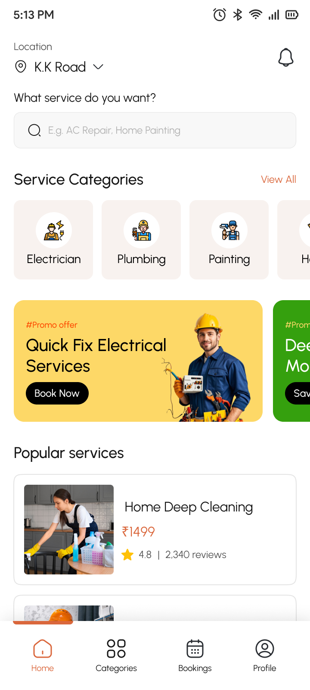
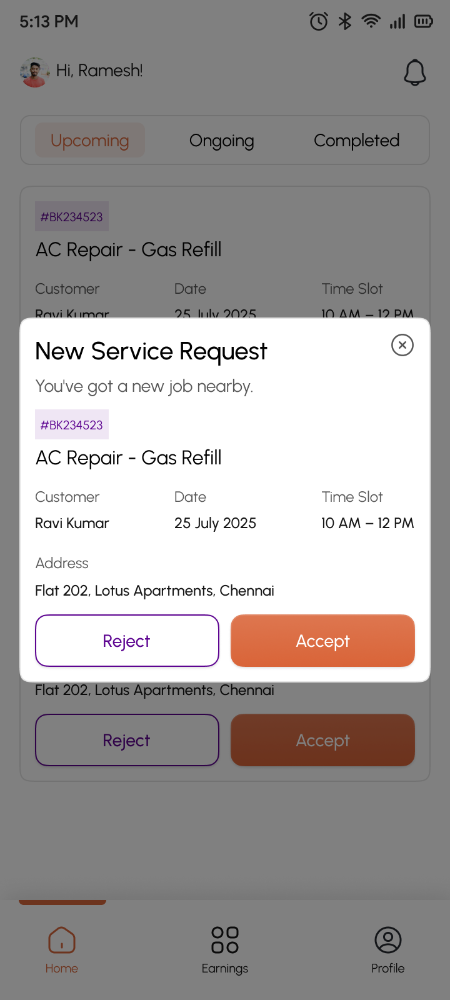

Find and book with confidence
Customers need to choose a location, understand what a service includes, and confirm the booking without uncertain handoffs.
MAGICWALL / HOME SERVICES PLATFORM
Magicwall connects customers booking everyday home services with technicians delivering those services. I designed experiences across discovery, booking, job assignment, completion and earnings.
Role: UI/UX design · Workflows: discovery, booking and job completion


01 / THE PROBLEM
Customers need to choose a location, understand what a service includes, and confirm the booking without uncertain handoffs.
Technicians need enough context to assess admin-assigned work, follow progress, complete a checklist and document the result.
02 / PATTERN REFERENCES
A compact review of publicly documented marketplace patterns—not a claim of formal user research or product benchmarking.
Service selection and scheduling form a guided booking journey. For Magicwall, this reinforced the value of recognizable service categories.
Task and location selection lead into provider context and booking. It highlights the value of showing enough detail before final confirmation.
Project details, upfront pricing and matching communicate what happens next. Magicwall makes its own admin-assignment step explicit.
03 / CONNECTED JOURNEY
The customer requests a service. Admin assignment connects that request with the technician's job workflow.
Operational handoff: Customer booking → Admin assigns job → Technician responds. No automatic assignment is assumed.
CUSTOMER APP / SCREEN STORIES
Six real screens reveal the decisions from sign-in to booking confirmation.
TECHNICIAN APP / SCREEN STORIES
Six real screens focus on the job journey: review, acceptance, progress, completion, and earnings.
06 / DESIGN DECISIONS
Choosing the service area first creates context for the rest of the booking journey.
The technician receives an admin-assigned job and can decide whether to take it.
Structured checks and photos support a clearer completion record than a single status change.
Completed-work financial information has a dedicated destination, separate from active jobs.
Reflection: designing the customer and technician apps together helped make the admin handoff and final job state easier to reason about. This case study shows design decisions, not measured impact or invented usability findings.
NEXT PROJECT